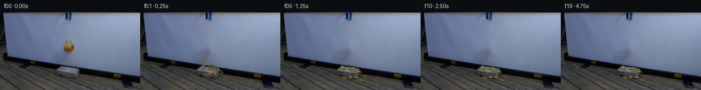

![首帧]()

Round 00
2026-11-05T14:18:38.771763+00:00像素候选变化代码 +372/−0inspection 更新
pixels 130cfec666b4560c · code 18c01bbc6d1a6760
查看本轮 generate.py 真实 diff
--- previous/generate.py
+++ current/generate.py
@@ -0,0 +1,372 @@
+"""Local, deterministic pixel continuation; no models, external assets or engines."""
+from pathlib import Path
+import json
+import math
+import numpy as np
+import cv2
+from PIL import Image, ImageDraw
+from scipy.spatial.transform import Rotation, Slerp
+from artifact_io import save
+
+ROOT = Path(__file__).resolve().parent
+W, H, SS = 256, 144, 5
+FPS, N, G = 4, 20, 1550.0
+DT = 1.0 / 1200.0
+RNG = np.random.default_rng(126)
+FIRST = np.asarray(Image.open(ROOT / 'first_frame.png').convert('RGB'))
+
+# Small reconstruction confined to the existing mug and its optical blur.
+mask = np.zeros((H, W), np.uint8)
+cv2.fillPoly(mask, [np.array([(120,49),(131,50),(134,55),(137,61),
+ (138,69),(135,76),(130,80),(120,78),(114,73),(113,64),(116,56)], np.int32)], 255)
+PLATE = cv2.inpaint(FIRST, mask, 5.0, cv2.INPAINT_TELEA)
+# Telea supplies a local boundary-driven fill. A small masked smoothing pass
+# removes its high-frequency interpolation ripple without altering the boundary.
+sm = cv2.GaussianBlur(PLATE, (5,5), .8)
+core = cv2.erode(mask, np.ones((3,3),np.uint8)) > 0
+PLATE[core] = sm[core]
+
+# The input is already in flight. Bottom y=73; brick contact y=104.5.
+V_DOWN, DROP = 340.0, 31.5
+HIT = (-V_DOWN + math.sqrt(V_DOWN*V_DOWN + 2*G*DROP)) / G
+
+def project(v):
+ """World units are scene-scale pixels; Y is up and Z is deck depth."""
+ v = np.asarray(v)
+ return np.stack([126.0 + v[...,0] + .46*v[...,2],
+ 106.0 + .10*v[...,0] + .36*v[...,2] - .96*v[...,1]], axis=-1)
+
+def support(x,z):
+ inside = (x >= -16) & (x <= 13) & (z >= -10) & (z <= 10)
+ return np.where(inside, 0.0, -9.5)
+
+LIGHT = np.array([-.34,.86,-.38]); LIGHT /= np.linalg.norm(LIGHT)
+CAMERA = np.array([.025,.36,-.934]); CAMERA /= np.linalg.norm(CAMERA)
+MATERIALS = {'outer': np.array([150.,118.,35.]),
+ 'inner': np.array([159.,139.,88.]),
+ 'edge': np.array([187.,170.,124.]),
+ 'base': np.array([124.,91.,28.])}
+
+class Fragment:
+ def __init__(self, name, vertices, faces, position, velocity, r0, r1, duration,
+ restitution=.23):
+ self.name = name
+ self.vertices = np.asarray(vertices, dtype=float)
+ self.faces = faces
+ self.pos = np.asarray(position,dtype=float)
+ self.vel = np.asarray(velocity,dtype=float)
+ self.r0, self.r1 = r0, r1
+ self.duration = duration
+ self.restitution = restitution
+ self.slerp = Slerp([0.,1.], Rotation.from_matrix(np.stack([r0,r1])))
+ self.spin_phase = float(RNG.uniform(0,2*np.pi))
+ self.texture = RNG.normal(0,1.7,len(faces))
+ self.track = []
+ self.contacts = 0
+ self.frozen = False
+ self.stop_time = None
+
+ def orientation(self,t):
+ # A short tumbling arc followed by inelastic angular damping.
+ u = np.clip(t / self.duration,0,1)
+ e = u*u*(3-2*u)
+ r = self.slerp([e]).as_matrix()[0]
+ wobble = .22*math.sin(2*math.pi*u)*math.sin(math.pi*u)
+ return Rotation.from_rotvec(np.array([wobble,0,wobble*.7])).as_matrix() @ r
+
+ def simulate(self, end=5.0):
+ self.track = np.zeros((int(end/DT)+1, 8),dtype=float)
+ for k in range(len(self.track)):
+ t = k*DT
+ rot = self.orientation(t)
+ verts = self.vertices @ rot.T
+ if k and not self.frozen:
+ self.vel[1] -= G*DT
+ self.pos += self.vel*DT
+ world = verts + self.pos
+ ground = support(world[:,0],world[:,2])
… diff truncated; 285 more lines …